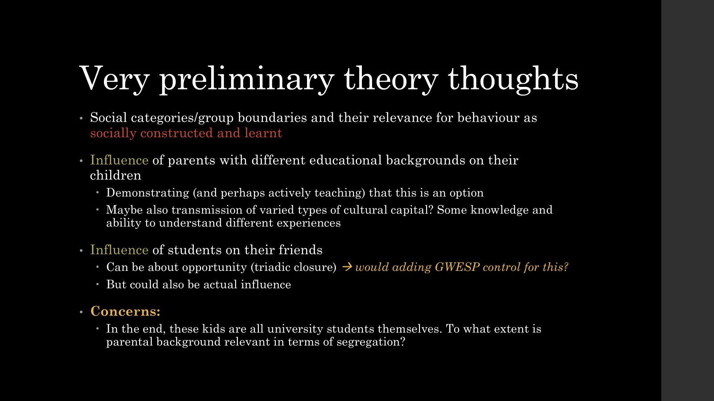
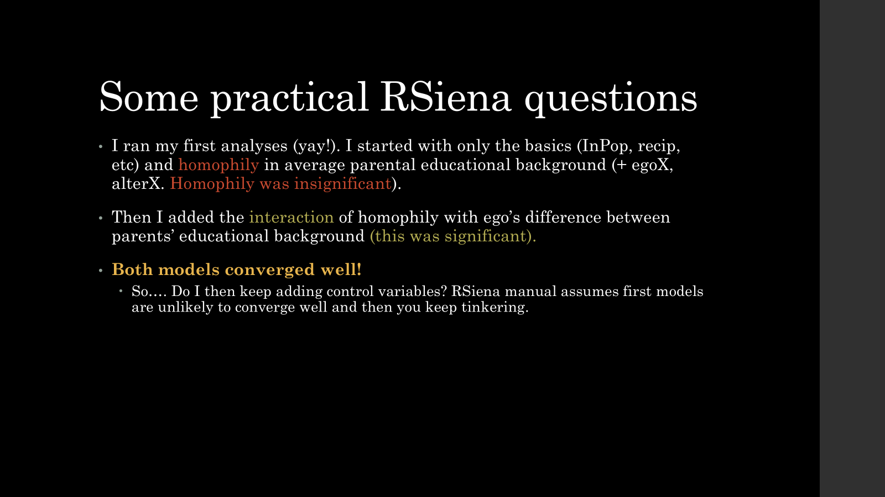

Progress Update


How to build a
model?
Step 1: convergence as prerequisite for a good
model
In next model, use parameter values from previous models(!!!)
Parameter of stat 1 affects parameter of stat 2 (think recip +
degree). Fase 3: all parameters are estimated.
Slightly change one parameter, see what happens to the others.
Generates variance/covariance matrix, specifies SEs.
- More iterations in fase 3 –> more specific SEs
Step 2: how similar is our simulated network to our observed
network? –> GOF
Based on characteristics that were not part of model
Macro-like characteristics!
- Based on descriptive statistics that stood out
Don’t make it too complex. Use standard available characteristics
Just say it fits. Nobody cares
Step 3: to what extent does this explain macro situation?
–> simulation with parameter on 0
Side notes
Time heterogeneity can arise because once network is
set, homophily becomes less relevant (relative to structural
effects)
If it’s not there on macro, how could it still be there on micro?
- Moran on distance 1 or decay, row-standardised or not –> check if
it remains insignificant
Use absDiffX instead of simX?
SimX
SimX does something like score of i minus score of j
It divides by observed range (not theoretical range)
Subtracts average similarity score of network
- Not updated with every miniscore?
Interpretation: I want friends with a similarity score closer to
me relative to the similarity score of the entire class
Advantage: if you want to compare multiple variables, it doesn’t
matter
absDiffX
Scaling
Can help with convergence issues
Moran’s I
See RSiena tutorial for Jochem’s use of this as goodness of fit
LS0tDQp0aXRsZTogIldlZWs3Ig0KYXV0aG9yOiAiU3VzYW5uYSINCmRhdGU6ICIyMDI2LTEwLTEyIg0Kb3V0cHV0OiBodG1sX2RvY3VtZW50DQotLS0NCg0KYGBge3Igc2V0dXAsIGluY2x1ZGU9RkFMU0V9DQprbml0cjo6b3B0c19jaHVuayRzZXQoZWNobyA9IFRSVUUpDQpgYGANCg0KIyBQcm9ncmVzcyBVcGRhdGUNCg0KIVtdKGltYWdlcy9jbGlwYm9hcmQtMzQ3MTU1NTM4Ny5wbmcpDQoNCiFbXShpbWFnZXMvY2xpcGJvYXJkLTExNzE5MDM2NC5wbmcpDQoNCiFbXShpbWFnZXMvY2xpcGJvYXJkLTI1MjYyOTE2ODkucG5nKQ0KDQohW10oaW1hZ2VzL2NsaXBib2FyZC00MTg2OTIyNDI4LnBuZykNCg0KIyBIb3cgdG8gYnVpbGQgYSBtb2RlbD8NCg0KKipTdGVwIDE6IGNvbnZlcmdlbmNlIGFzIHByZXJlcXVpc2l0ZSBmb3IgYSBnb29kIG1vZGVsKioNCg0KSW4gbmV4dCBtb2RlbCwgdXNlIHBhcmFtZXRlciB2YWx1ZXMgZnJvbSBwcmV2aW91cyBtb2RlbHMoISEhKQ0KDQpQYXJhbWV0ZXIgb2Ygc3RhdCAxIGFmZmVjdHMgcGFyYW1ldGVyIG9mIHN0YXQgMiAodGhpbmsgcmVjaXAgKyBkZWdyZWUpLiBGYXNlIDM6IGFsbCBwYXJhbWV0ZXJzIGFyZSBlc3RpbWF0ZWQuDQoNClNsaWdodGx5IGNoYW5nZSBvbmUgcGFyYW1ldGVyLCBzZWUgd2hhdCBoYXBwZW5zIHRvIHRoZSBvdGhlcnMuIEdlbmVyYXRlcyB2YXJpYW5jZS9jb3ZhcmlhbmNlIG1hdHJpeCwgc3BlY2lmaWVzIFNFcy4NCg0KLSAgIE1vcmUgaXRlcmF0aW9ucyBpbiBmYXNlIDMg4oCTXD4gbW9yZSBzcGVjaWZpYyBTRXMNCg0KKipTdGVwIDI6IGhvdyBzaW1pbGFyIGlzIG91ciBzaW11bGF0ZWQgbmV0d29yayB0byBvdXIgb2JzZXJ2ZWQgbmV0d29yaz8g4oCTXD4gR09GKioNCg0KQmFzZWQgb24gY2hhcmFjdGVyaXN0aWNzIHRoYXQgd2VyZSBub3QgcGFydCBvZiBtb2RlbA0KDQpNYWNyby1saWtlIGNoYXJhY3RlcmlzdGljcyENCg0KLSAgIEJhc2VkIG9uIGRlc2NyaXB0aXZlIHN0YXRpc3RpY3MgdGhhdCBzdG9vZCBvdXQNCg0KRG9uJ3QgbWFrZSBpdCB0b28gY29tcGxleC4gVXNlIHN0YW5kYXJkIGF2YWlsYWJsZSBjaGFyYWN0ZXJpc3RpY3MNCg0KSnVzdCBzYXkgaXQgZml0cy4gTm9ib2R5IGNhcmVzDQoNCioqU3RlcCAzOiB0byB3aGF0IGV4dGVudCBkb2VzIHRoaXMgZXhwbGFpbiBtYWNybyBzaXR1YXRpb24/IOKAk1w+IHNpbXVsYXRpb24gd2l0aCBwYXJhbWV0ZXIgb24gMCoqDQoNCiMgU2lkZSBub3Rlcw0KDQoqKlRpbWUgaGV0ZXJvZ2VuZWl0eSoqIGNhbiBhcmlzZSBiZWNhdXNlIG9uY2UgbmV0d29yayBpcyBzZXQsIGhvbW9waGlseSBiZWNvbWVzIGxlc3MgcmVsZXZhbnQgKHJlbGF0aXZlIHRvIHN0cnVjdHVyYWwgZWZmZWN0cykNCg0KSWYgaXQncyBub3QgdGhlcmUgb24gbWFjcm8sIGhvdyBjb3VsZCBpdCBzdGlsbCBiZSB0aGVyZSBvbiBtaWNybz8NCg0KLSAgIE1vcmFuIG9uIGRpc3RhbmNlIDEgb3IgZGVjYXksIHJvdy1zdGFuZGFyZGlzZWQgb3Igbm90IOKAk1w+IGNoZWNrIGlmIGl0IHJlbWFpbnMgaW5zaWduaWZpY2FudA0KDQoqKlVzZSBhYnNEaWZmWCBpbnN0ZWFkIG9mIHNpbVg/KioNCg0KU2ltWA0KDQotICAgU2ltWCBkb2VzIHNvbWV0aGluZyBsaWtlIHNjb3JlIG9mIGkgbWludXMgc2NvcmUgb2Ygag0KDQogICAgLSAgIFJlc3VsdHMgaW4gcHJlZmVyZW5jZSBmb3IgcGVvcGxlIHdpdGggbG93ZXIgc2NvcmVzIHZzIHBlb3BsZSB3aXRoIGhpZ2hlciBzY29yZXMsIGV2ZW4gaWYgYWJzb2x1dGUgZGlmZmVyZW5jZSBpcyB0aGUgc2FtZQ0KDQogICAgICAgIC0gICBOZXZlciBtaW5kISBJdCBkb2VzIHRha2UgYWJzb2x1dGUgdmFsdWVzDQoNCi0gICBJdCBkaXZpZGVzIGJ5IG9ic2VydmVkIHJhbmdlIChub3QgdGhlb3JldGljYWwgcmFuZ2UpDQoNCiAgICAtICAgUGVyZmVjdCBzaW1pbGFyaXR5IOKAk1w+IDENCg0KICAgIC0gICBMYXJnZXN0IG9ic2VydmVkIGRpc3NpbWlsYXJpdHkg4oCTXD4gMA0KDQotICAgU3VidHJhY3RzIGF2ZXJhZ2Ugc2ltaWxhcml0eSBzY29yZSBvZiBuZXR3b3JrDQoNCiAgICAtICAgTm90IHVwZGF0ZWQgd2l0aCBldmVyeSBtaW5pc2NvcmU/DQoNCi0gICBJbnRlcnByZXRhdGlvbjogSSB3YW50IGZyaWVuZHMgd2l0aCBhIHNpbWlsYXJpdHkgc2NvcmUgY2xvc2VyIHRvIG1lIHJlbGF0aXZlIHRvIHRoZSBzaW1pbGFyaXR5IHNjb3JlIG9mIHRoZSBlbnRpcmUgY2xhc3MNCg0KLSAgIEFkdmFudGFnZTogaWYgeW91IHdhbnQgdG8gY29tcGFyZSBtdWx0aXBsZSB2YXJpYWJsZXMsIGl0IGRvZXNuJ3QgbWF0dGVyDQoNCmFic0RpZmZYDQoNCi0gICB4aWogbXVsdGlwbGllZCBieSBhYnNvbHV0ZSAodmkgbWludXMgdmopDQoNCi0gICBBZHZhbnRhZ2U6IEkgdW5kZXJzdGFuZCB3aGF0IEknbSBkb2luZyB3aXRoIHRoaXMNCg0KKipTY2FsaW5nKioNCg0KQ2FuIGhlbHAgd2l0aCBjb252ZXJnZW5jZSBpc3N1ZXMNCg0KKipNb3JhbidzIEkqKg0KDQpTZWUgUlNpZW5hIHR1dG9yaWFsIGZvciBKb2NoZW0ncyB1c2Ugb2YgdGhpcyBhcyBnb29kbmVzcyBvZiBmaXQNCg==